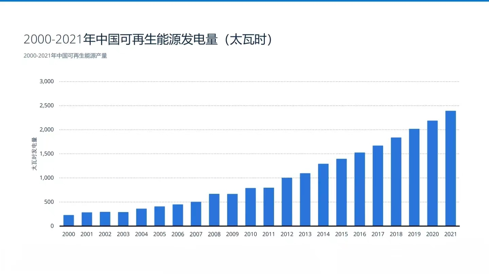

新能源发展前景
中国可再生能源发电量
随着经济发展，中国的能源需求将持续增加。无论考虑通过能源多样 化确保长期能源供给安全，还是通过能源体系节能减排与清洁化来实现“双碳”目标，可再生能源 的开发利用都是能源结构调整的必然途径。在水、核、风、光四大类新能源中，我国风、光开发潜力最为优越，最可能成为未来的支柱能源。因此，未来一段时间内以风电、光伏为核心的新能源装 机量仍将不断上涨，对其上游原材料、新能源设备制造生产商形成长期的景气支撑。此外，为应对 新能源发电比例上涨、调峰需求增加，储能技术将迎来高速发展，除传统的机械储能、水电储能外， 电化学储能、可再生能源制氢等新型储能需求量将伴随新能源装机量的提升而不断上涨，其上游原 材料也将受益于此。

我国能源消费量
我国能源消费较快增长，能源需求不断提高。
©2020 - GRID